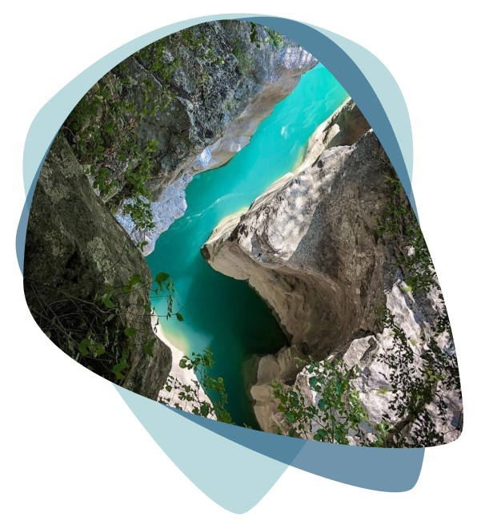
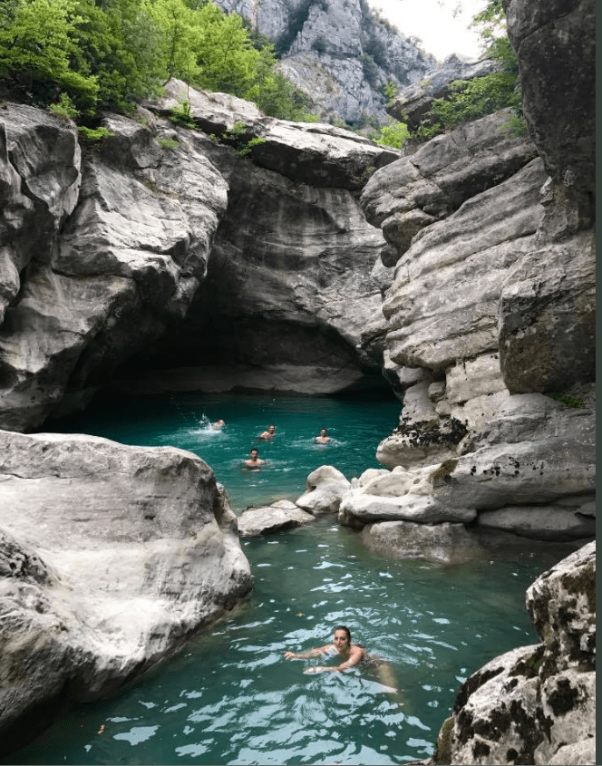
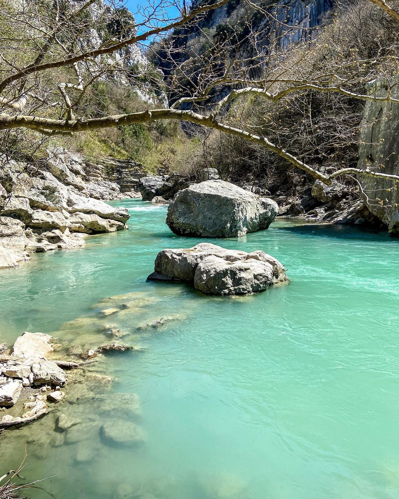

EKSPLORO TIRANEN
Kanioni i Erzenit
Ky është nga kanionet më të bukura të zonës së Tiranës. Ka një gjatësi prej 1.08 km dhe shtrihet në grykën e Skoranës. Kanioni është i mbushur me vaska , katarakte, guva e ngushtica nga të gjitha format. Natyra ka krijuar në miliona vjet një pamje spektakolare.

Diku në mesin e kanionit janë tre burime. Dy prej burimeve kane ujë me mineral squfuri. Kjo bën që uji nga burimet e poshtë të ketë një ngjyrë të kaltër në blu, ndërsa mbi burime ai është me ngjyrë të gjelbër. Uji i kristaltë dhe thellësia e kanioneve krijojnë mundësinë për të notuar në të.
Lumi i Erzenit është i gjatë 108 km, me prurje rreth 102 l/sek. Erzeni buron nga zona e Gurakuqit, në një lartësi mbi 1300 m mbi nivelin e detit, në lindje të Tiranës, dhe derdhet në Gjirin e Lalëzit, në veri të Durrësit. Në zonën e sipërme të rrjedhës së tij, Erzeni ka gërryer një shtrat të ngushtë në shkëmb, dhe më pas deri në afërsi të Tiranës ka një shtrat me zhavorr.


Kohët e fundit kanionet në lumin Erzen janë shumë të vizituara, një atraksion i jashtëzakonshëm për turistët. Lumi ndodhet vetëm 20 kilometra larg Tiranës. Këto kanione ndodhen përgjatë rrjedhës së lumit Erzen. Uji i këtij lumi që rrjedh në një terren shkëmbor gjatë shekujve ka krijuar kanione spektakolare.